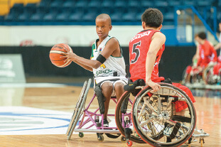
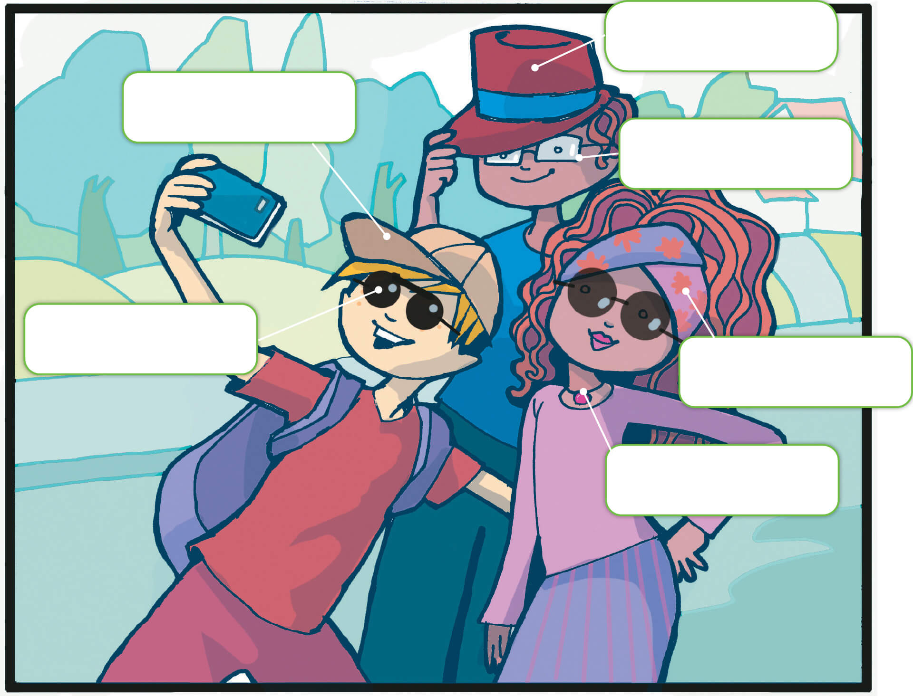
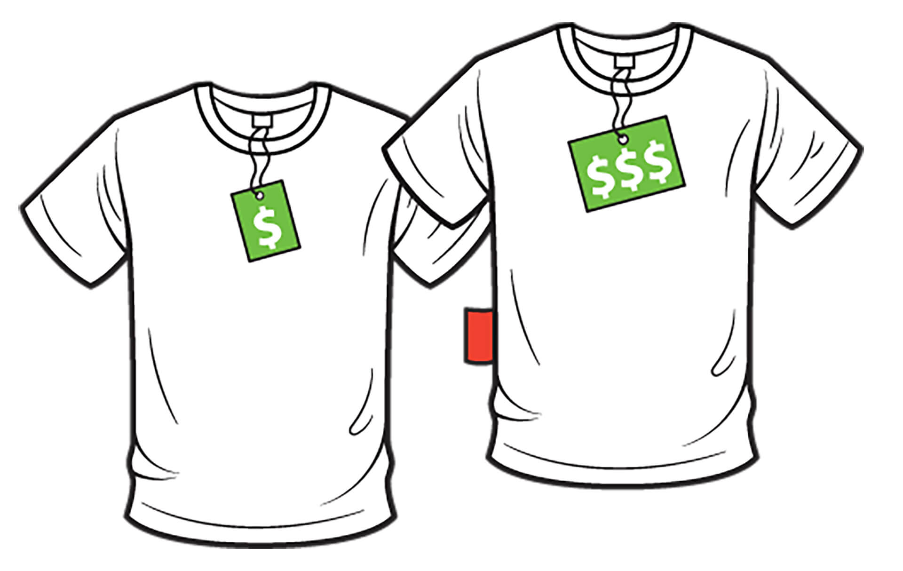
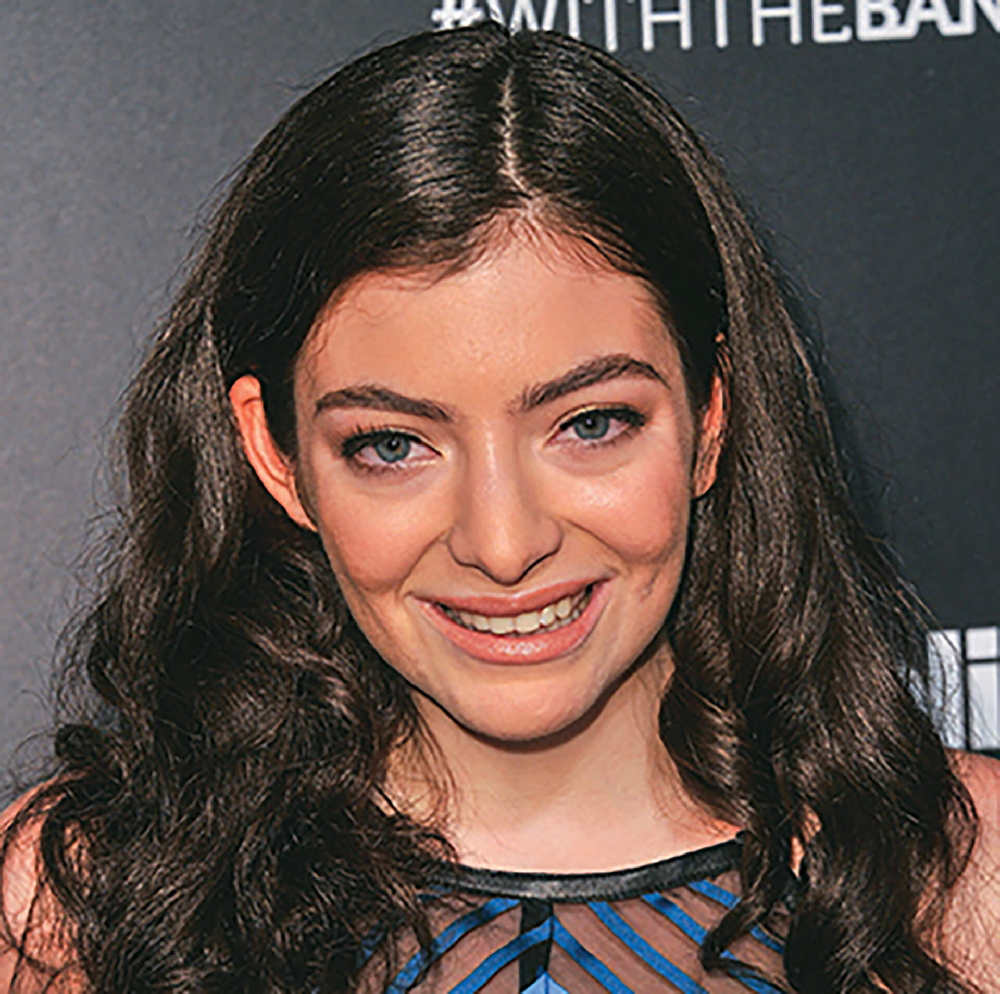
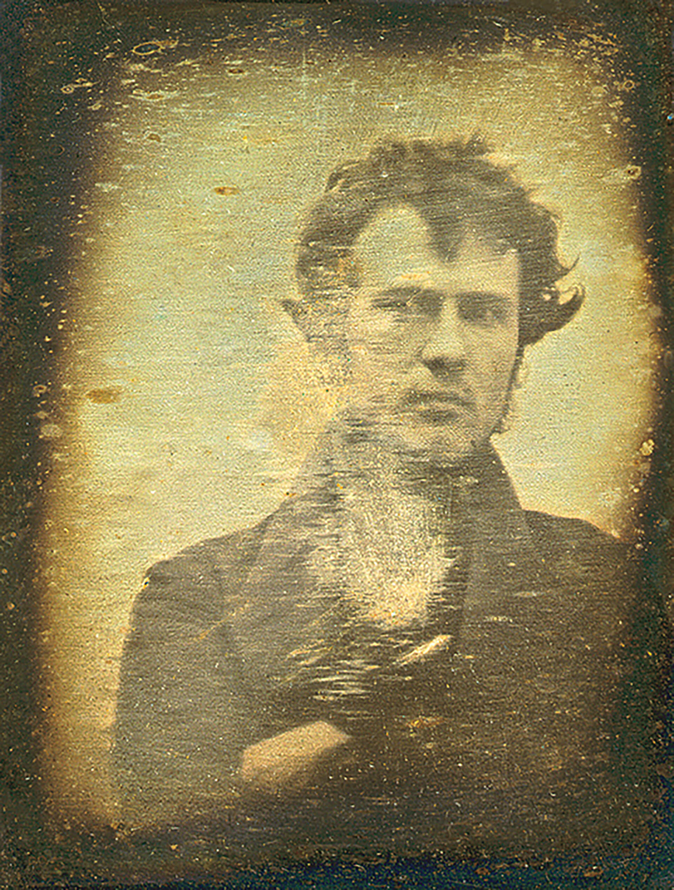

Como é a aparência das celebridades que costumam aparecer em capas de revista, propagandas ou sites de entretenimento?
Você acha que o visual é importante para essas pessoas? E para você?
As celebridades são parecidas com as pessoas que você vê no dia a dia? Por quê?
Você se identifica com os jovens que vê em revistas, sites, filmes e programas de televisão?
Goals
Neste capítulo, você vai aprender a descrever pessoas e seu visual, falando sobre características físicas, roupas e acessórios. Também vai ler e comentar sobre mudanças na aparência, utilizando o presente e o passado. Além disso,
vamos refletir sobre como as pessoas são representadas pela mídia e discutir sobre o que é real e o que só parece ser: as aparências enganam!
Check it out
Physical characteristics
Look at these magazine covers and complete the descriptions with words from the box.
a) De que forma essas imagens estão relacionadas às fotos publicadas em revistas e sites de entretenimento?
b) Que palavras da seção Look it up, ao pé da próxima página, descrevem cada imagem?
The following text is a petition. Read it and discuss in pairs how it relates to the images above.
A petition is a formal document written to an authority in order to request something.
Seventeen Magazine: Give Girls Images of Real Girls
[...] Here’s what lots of girls don’t know. Those “pretty women” that we see in magazines are fake. They’re often photoshopped, air-brushed, edited to look thinner, and to appear like they have perfect skin. A girl you see in a
magazine probably looks a lot different in real life. [...]
That’s why I’m asking Seventeen Magazine to commit to printing one unaltered – real – photo spread per month. I want to see regular girls that look like me in a magazine that’s supposed to be for me. [...]
BLUHM, Julia. Seventeen magazine: give girls images of real girls! Available at: <http://www.change.org/p/seventeen-magazine-give-girls-images-of-real-girls>. Accessed on: 11 Dec. 2017.
Which of the following sentences is false, according to the petition?
a) Teen magazines edit photos so the models look perfect.
b) The petition asks for all magazine photos to be unaltered.
c) Real girls are not like the “pretty women” in magazines.
Now answer the following questions.
a) Who is the author of the petition?
b) Who is the petition for?
c) Where is it published?
Look it up
air-brushed:
edited:
fake:
perfect skin:
photo spread:
unaltered:
Ideas factory
It’s time to make your own magazine cover! First, think of headlines that interest you. What do you want to read about? Then, choose a significant photo for the cover. You can make it using pen and paper or a website. Decide with
your teacher.
Check it out
Describing people – be and have
Match each characteristic to the corresponding icon.
a) average height
b) plump/overweight
c) old
d) short
e) tall
f) thin/slim
g) well built
h) young

Daniel Klein. 2017. Diigtal.
To describe general appearance, we use be; to describe specific things, such as hair and eyes, we use have:
My sisters are young and short. They have long blond hair.
Listen up
Look at the photos below and complete the descriptions.
Think of a famous person or someone at your school. Draw him/her or glue his/her photo in your notebook. Don’t show your picture to your classmates!
Sit back-to-back with a partner. Your partner is going to describe his/her picture for you to draw on your notebook. Then, describe your picture to your friend. In the end, compare your pictures and see if they look alike.
Connections
Have you ever felt pressured to change the way you look? Many celebrities are tired of unreal beauty standards and are fighting against them. Check out the following examples and discuss this subject with your classmates.
“You look how you look, you have to be comfortable. What are you going to do? Be hungry every single day to make other people happy? That’s just dumb.”
WAGONER, Mackenzie. 6 times Jennifer Lawrence took a stand on body positivity. Available at: <http://www.vogue.com/13424097/jennifer-lawrence-body-image-diet-weight/>. Accessed on: 17 Jan. 2017.
“At the end of the day, you’re a beautiful person and you don’t need to meet anyone else’s standards. Just live for you.”
FINLEY, Taryn. Skai Jackson on Internet haters: ‘I’m just rooting for myself’. Available at:
<http://www.huffingtonpost.com/entry/skai-jackson-on-internet-haters-im-just-rooting-for-myself_us_5734af0ae4b077d4d6f24b81>. Accessed on: 17 Jan. 2017.
Athletes also feel a lot of pressure about their bodies. Take a look at the information below and identify their physical characteristics.
My name is Matt and I 15 years old. My appearance nowadays very different from when I a child. When I
8, my hair long and I short. Nowadays it the opposite: my hair short, and
I pretty tall.
Check it out
Clothing and accessories
Our appearance isn’t defined only by our bodies. Clothing and accessories can change how we look and also express how we feel. Can you name the items in this image?
cap - glasses - hat - headband - necklace - sunglasses

Cris Eich. 2017. Digital.
Unscramble the letters to name the pieces of clothing.
o describe clothing and accessories, we use the verb wear:
Mike always wears sunglasses.
Kat is wearing new jeans today.
Reading time
Discuss in pairs
a) Como você escolhe as roupas que veste?
b) Você costuma procurar dicas de moda em revistas, on-line ou conversando com amigos?
c) Você gosta de roupas de marcas famosas? Por quê?
The following text shows two different opinions about brand name clothes, one in favor and one against. Can you guess their reasoning? Read and find out.
Fashion Debate: Brands vs. No Brands
Two opinionated writers give us their points of view on whether brands really matter.

Daniel Klein. 2017. Diigtal.
Brand Name Buyer
By Shari Eisen
[…] If I walk into a store and see a plain t-shirt for $20 and a popular brand I recognize on sale for $25, I’m far more likely to buy the brand because I know that I’m buying a good quality product from a reliable company. […]
Brand name products bring us good quality merchandise, confidence in ourselves and great looking items. That certainly sounds worth it to me.
No Name Necessary
By Arfeen Malick
[…] Perhaps those teens buying strictly brand names are looking to their clothes for self-confidence. […]
Although brand names are more expensive, perhaps the appeal is that you aren’t only paying for the logo but also for status, confidence, and for the ability to fit in. But wait a minute, can’t I get all those things for free?
FASHION debate: brands vs. no brands. Available at: <http://faze.ca/fashion-debate-brands-vs-no-brands/>. Accessed on: 11 Dec. 2017.
Are the following sentences true (T) or false (F), according to the text?
Shari thinks popular brand name clothes have superior quality.
Arfeen thinks popular brand name clothes are worth the price.
Both agree that popular brand name clothes are more expensive than no-name clothes.
Arfeen thinks teens buy popular brand name clothes to feel confident.
Shari thinks popular brand name clothes are too expensive to buy.
Do you agree with any of the writers? Why? Share with your classmates.
Enjoy!
Let’s play bingo! Follow your teacher’s instructions.
Your turn
Do you know these famous people? Match each one to his/her description.
As far as selfies go, the photo of 17-year-old Grammy winner Lorde was a coup. “In bed in paris with my acne cream on,” the singer wrote on Instagram, captioning herself in a black T-shirt and messy bun, white splotches visible
on her face.

Getty Images/WireImage/Allen Berezovsky
Lorde at a red carpet photo shoot
[...] The scene was utterly ordinary – the way most teen girls go to bed each night – which was precisely what made it so out of the ordinary. How often do you see a celebrity looking like a regular awkward teen? (Answer:
almost never.) [...] [Now] They’re making silly faces (ugly selfies!) and experimenting with identities. [...]
“Selfies make possible a vast array of gazes that simply were not seen before.”
BENNETT, Jessica. Our bodies, our selfies: the feminist photo revolution. Available at: <http://time.com/3099103/feminist-selfies-uglyfeminists-iwokeuplikedis/>. Accessed on: 11 Dec. 2017.
Lorde posted a selfie looking like a regular teen girl.
It’s common to see celebrities looking like ordinary people.
Lorde posted a very glamorous selfie.
Selfies can show how people really are.
How do you feel about the photos on this page? Which photo do you identify with? Why?
Time for a selfie hunt! In pairs, look for interesting selfies online and select the ones you like best. Then, with your teacher’s help, choose two of them to share with your classmates.
Do you know?

Biblioteca do Congresso/Robert Cornelius
[...] the picture considered by many to be the first photographic portrait ever taken was a “selfie”. [...] Cornelius had set his camera up at the back of the family store in Philadelphia. He took the image by removing the lens cap
and then running into frame where he sat for a minute before covering up the lens again. On the back he wrote “The first light Picture ever taken. 1839.”
ROBERT Cornelius’ self-portrait: the first ever “selfie” (1839). Available at: <http://publicdomainreview.org/collections/robert-cornelius-self-portrait-the-first-ever-selfie-1839/>. Accessed on: 11 Dec. 2017.
Connections
Before everyone started taking selfies, artists used to create self-portraits. They represented their looks, their activities and their feelings with these works. Take a look at some examples and match a feeling with each
self-portrait.
References: 1. VAN GOGH, Vincent. Self-portrait. 1889. 1 oil on canvas, 65 cm × 54 cm. Musée D’Orsay, Paris, France.
2. LEYSTER, Judith. Self-portrait. 1635. 1 oil on canvas, 72.3 cm × 65.3 cm. National Gallery of Art, Washington, United States.
3. KAHLO, Frida. Self-portrait dedicated to Leon Trotsky. 1937. 1 oil on masonite, 87 cm × 70 cm. National Museum for Women in the Arts, Washington, United States.
4. MATISSE, Henri. Self-portrait. 1937. 1 charcoal on wove paper, 34 cm × 28.5 cm. National Gallery of Art, Washington, United States.
5. WARHOL, Andy. Self-portrait. 1986. Hirshhorn Museum and Sculpture Garden, Washington, United States.
6. LAWRENCE, Jacob. Self-portrait. 1977. 1 gouache and tempera on paper, 58.4 cm × 78.7 cm. National Academy of Design, New York, United States.
Describe each artist’s appearance. What do they look like? What are they wearing?
Let’s talk
Draw a self-portrait or take a selfie and bring it to the classroom. Make sure it really represents your personality. In small groups, trade pictures with a classmate and describe his/her portrait to the other students. Try to guess
each other’s feelings.
Reading time
Body image and self-esteem
Brainstorm with a partner some words related to self-esteem.
Which of the following words is not connected to self-esteem? Highlight it.
Read the article and match the expressions.
Body image and self-esteem
[…] Why Are Self-Esteem and Body Image Important? […]
Self-esteem is all about how much people value themselves [...] Body image is how someone feels about his or her own physical appearance. [...]
What Influences a Person’s Self-Esteem? […]
The changes that come with puberty can affect how both girls and guys feel about themselves. [...] Some teens [...] may compare themselves with the people around them or with actors and celebs they see on TV, in movies, or in
magazines. [...] Family life can sometimes influence self-esteem. [...]
Tips for Improving Your Body Image
[...] The first thing to do is recognize that your body is your own, no matter what shape, size, or color it comes in.
BODY image and self-esteem. Available at: <http://teenshealth.org/teen/your_mind/body_image/body_image.html>. Accessed on: 11 Dec. 2017.